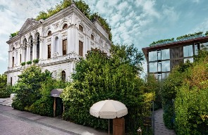
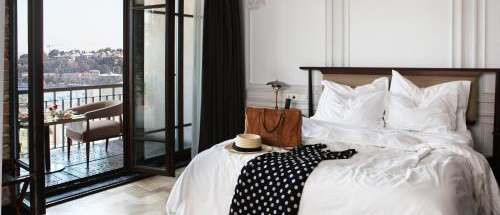
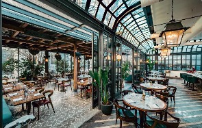
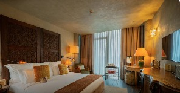
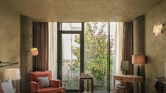
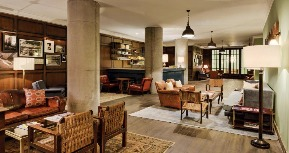
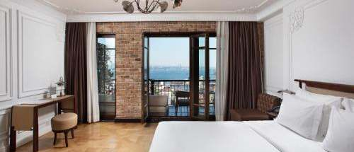
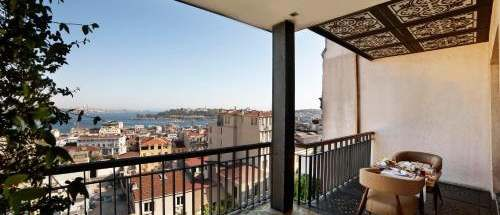
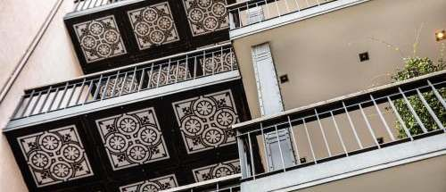
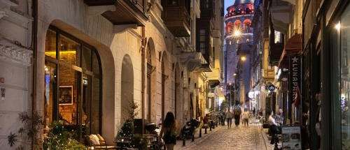

Istambul é a única cidade do mundo que amanhece na Europa e anoitece na Ásia. Entre as duas margens do Bósforo, minaretes e cúpulas desenham um horizonte que atravessa dois mil anos de história: a Basílica de Santa Sofia, a Mesquita Azul com seus azulejos de Iznik, o Palácio de Topkapi e as cisternas subterrâneas de Constantinopla convivem com cafés à beira-d'água, galerias contemporâneas e o burburinho do Grande Bazar, onde o aroma de especiarias, chá de maçã e couro se mistura ao som dos vendedores.
As duas opções selecionadas ficam em Beyoğlu, o lado cosmopolita da cidade: ruas de pedra que descem de Istiklal até a Torre de Gálata, ateliês, bares no terraço e a melhor cena gastronômica de Istambul. Dali, o bonde T1 e a ponte de Gálata levam ao centro histórico de Sultanahmet em cerca de 15 minutos, o que permite viver a Istambul moderna à noite e a Istambul imperial de dia.




Um palazzo do século XIX no coração de Beyoğlu, restaurado pelo clube mais cobiçado do mundo. O Soho House Istanbul reúne 87 quartos com tetos altos, camas king, banheiros em mármore com chuveiro de chuva, mobiliário sob medida e amenidades orgânicas locais. Hóspedes têm acesso à House: o Cecconi's, com cozinha italiana sob tetos ornamentados, o Allis Bar com releituras da cozinha turca, o terraço no rooftop e o Cowshed Spa, com hammam, sauna, sala de vapor, piscina coberta e estúdio de yoga. É a escolha para quem quer viver a Istambul contemporânea: bares, galerias e a Istiklal a poucos passos, com serviço de membro.




Um edifício histórico de 1890 na Serdar-ı Ekrem, a rua de ateliês e cafés que desce da Torre de Gálata. Com apenas 20 quartos, o Georges é um boutique de verdade: pé-direito alto, tijolo aparente, madeira clara e varandas de ferro que se abrem para o Chifre de Ouro, com a cidade velha ao fundo. O quarto Deluxe cotado tem varanda privativa e vista para o mar. O restaurante Le Fumoir serve cozinha francesa do brunch ao jantar, com coquetéis no terraço ao entardecer. A poucos minutos a pé estão Karaköy, o Bazar das Especiarias e a ponte de Gálata, e o bonde para Sultanahmet passa na base da colina.
| Hotel · quarto | Por pessoa | Total do quarto | |
|---|---|---|---|
1 | Soho House Istanbul ★★★★★Room (Medium) · 36 m² · café da manhã incluído · tarifa não reembolsável | R$ 3.826,68 | R$ 7.653,36 |
2 | Georges Hotel Galata ★★★★Deluxe Room com varanda · 32 m² · somente hospedagem, sem café · tarifa não reembolsável | R$ 4.777,39 | R$ 9.554,77 |